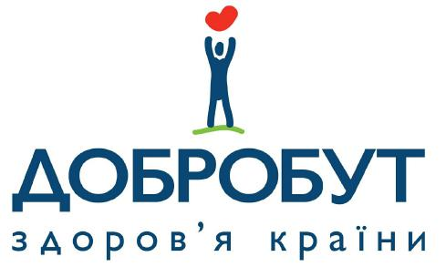

Neurologist examination
 |
"MEDICAL CENTER "DOBROBUT-CLINIC" LLC. License of MoH of Ukraine Series AE # 282543 as of 15.10.2013 Adult outpatient department Day patient department Instrumental diagnostics Laboratory investigations |
||
|---|---|---|---|
044/097 495 2 888 5288 |
Contact center Emergency |
Examination by a neurologist
| Date: 19.06.2023 12:04 | Patient ID: | 1560256 |
|---|---|---|
| Patient: Zherlitsyna Anastasia Stanislavivna | Sex: | Female |
| Date of Birth: 25.04.1976 | Age: | 47 years |
| No. patient history: no card | ||
| Chief complaint ICPC-2: |
|---|
Other: decreased mental activity, difficulty concentrating; daytime sleepiness with satisfactory duration and quality of night sleep; a feeling of unsystematic dizziness, which decreases in the lying position. |
| History of the present illness |
|---|
According to the patient, the symptoms continue during May-June 2023, about 2 weeks ago she had a worsening of her condition - headache and systemic dizziness in the afternoon, the symptoms regressed after taking IBUPROFEN, during the last 7 days mental weakness persists, the patient cannot show normal mental activity, after an examination by a clinical oncologist, sent to coordinate recommendations; 16/6/2023 MRI of the brain - control - reduction of the previously known focal lesion in the left occipital region to a volume of 11x7.5x7.5mm; from 4/5/2023 continues taking IMATINIB; 1/2023 appointment of ELIQUIS instead of АСК. Right-handed. IT specialist. |
| Life history | ||
|---|---|---|
The patient had no allergic reaction. Bad habits: smoking |
||
| Number of cigarettes per day: 3 | Number of years smoking: 32 | Index pack/years = 4.8 |
The last CT scan of the chest was performed The last time the study of external respiration was conducted |
||
| Diagnosis ICD |
|---|
| I62.9 - Intracranial hemorrhage (non-traumatic), unspecified* |
| Diagnosis clinical |
|---|
GIST of the stomach with secondary liver damage. Treatment with Pazopanib with the development of posterior reversible encephalopathy syndrome 13/1/2023, positive dynamics of changes in the left occipital region according to MRI data 16/6/2023. Symptoms of headache and dizziness are more comparable to the side effect of IMATINIB. |
| Hospital leaf |
|---|
| *Acquainted with the rules of being on sick leave. The certificate of incapacity for work can be extended or closed only after a re-examination of the patient. The examination must be carried out by the doctor of the unit (clinic) where the leaflet was opened |
| Return visit |
|---|
| Repeat visit: In 4 weeks ( 17.07.2023 ) |
| Provided service |
|---|
| Additional recommendations |
|---|
1. Mode of rational physical and mental workload, clear separation of work and leisure; observance of the daily regime, compliance with the rules of food hygiene, informational hygiene. 2. Avoid overwork. 3. Avoid long breaks between meals. 4. Optimum mode of fluid consumption, preferably fortified drink. 5. Refusal to smoke!!! 6. Follow a mobile lifestyle, in particular, increase daily aerobic exercise (walking up to 7-8 thousand steps). 7. Continue taking ELIQUIS in the recommended doses. |
APPROVED Order of the Ministry of Health of Ukraine February 14, 2012 No. 110 (as amended by the order of the Ministry of Health of Ukraine dated December 9, 2020 No. 2837) |
|---|
The name of the ministry, other executive body, enterprise, institution, organization to whose management the health care institution belongs Ministry of Health of Ukraine Name and location (full mailing address) of the health care facility where the form is being filled out Dobrobut Polyclinic Medical Center LLC Code according to USREOU 38806862 Address: 04211, Kyiv, Volodymyr Ivasyuk Ave., 16V |
MEDICAL DOCUMENTATION | |
|---|---|---|
Form of primary accounting documentation No. 003-6/o APPROVED Order of the Ministry of Health of Ukraine from February 14, 2012 No. 110 |
INFORMED VOLUNTARY CONSENT OF THE PATIENT FOR DIAGNOSTIC, TREATMENT AND SURGERY AND ANESTHESIA |
||
|---|---|---|
I, Zherlitsyna Anastasia Stanislavivna received information about the nature of my disease, the peculiarities of its course, diagnosis and treatment at the Dobrobut Polyclinic Medical Center LLC (the name of the health care institution) I am familiar with the examination and treatment plan. I received a full explanation about the nature, purpose, approximate duration of the diagnostic and treatment process and about possible adverse consequences during its implementation, about the need to observe the regimen determined by the doctor during the treatment process. I undertake to immediately notify the attending physician of any deterioration in well-being. I am informed that non-compliance with the recommendations of the attending physician, the regimen of taking the prescribed drugs, uncontrolled self-medication can complicate the treatment process and negatively affect the state of health. I was given information in an accessible form about the probable course of the disease and the consequences in case of refusal of treatment. I had the opportunity to ask any questions that interested me regarding the state of health, the course of the disease and treatment, and I received answers to them.
I, Zherlitsyna Anastasia Stanislavivna, agree with the proposed treatment plan. |
I confirm that I am familiar with the cost of services at the health care facility.
I received clear, correct and understandable information about the service and its cost before purchasing it and the conditions of stay in a health care institution.
I give my informed consent to the collection and processing of my personal data, subject to compliance with their protection in accordance with the requirements of the Law of Ukraine "On the Protection of Personal Data".
With my own signature, I give informed consent to the transfer of information related to my state of health, the fact of seeking medical help, diagnosis, as well as information obtained during the medical examination and their results, to the following persons:
The attending physician informed me that during medical care, the threat of SARS-CoV-2 infection of the patient and medical staff cannot be completely eliminated due to close contact and the high contagiousness of the virus
______________________________________________________________________________________________
____________________________________________________________ (full name, date of birth, phone number).
Patient (legal representatives) _______________________________________________________ Date: 19.06.2023